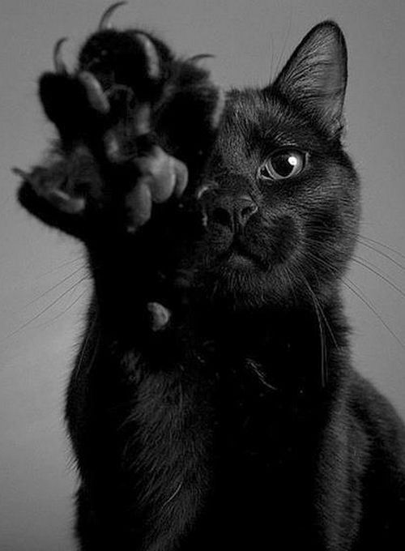

Muita gente acredita que algumas pessoas passaram a capturar esses animais na mata, ainda filhotes, e a domesticá-los. Mas, na verdade, o processo foi inverso. A origem do gato doméstico se deu pela aproximação dos próprios animais silvestres dos humanos.
Tudo isso porque esses felinos começaram a ver que havia uma grande quantidade de roedores perto das casas. Atraídos pela alimentação abundante, alguns tipos de gatos selvagens passaram a ir em busca desses alimentos. Foi aí que essa linda amizade entre humanos e bichanos começou.
Uma pesquisa feita sobre a origem dos gatos, que foi publicada em 2007 na revista Science, concluiu que foi possível rastrear os ancestrais dos bichanos, ou seja, de onde surgiram os gatos, há mais de 100 mil anos. Segundo os cientistas, todos eles vieram do Oriente Médio.
Além disso, os especialistas concluíram que para nascer o que hoje conhecemos como gato doméstico, cinco variedades de felinos cruzaram entre si. Os cruzamentos foram variados até chegar ao que hoje é chamado de Felis silvestris lybica, que é considerado o ancestral direto dos felinos domésticos.
Outra curiosidade que esses cientistas descobriram sobre a origem dos gatos é que ainda existem gatos selvagens com o mesmo DNA (material genético) dos bichanos domésticos. Esses exemplares foram localizados em:
Israel;
Emirados Árabes Unidos;
Bahrein;
Durante os estudos, os cientistas também buscaram compreender como surgiram os gatos domésticos e como foi essa aproximação entre homem e felinos. Estima-se que a origem da espécie aconteceu entre 130 mil e 160 mil anos atrás.
Entretanto, a aproximação desses felinos com os humanos é algo que mais recente. Estima-se que isso aconteceu há aproximadamente 10 a 12 mil anos. Foi nessa época que os agricultores teriam começado a fazer o plantio. Com as lavouras crescendo, os roedores acharam um local interessante para se reproduzir e, claro, se alimentar.
Foi então que esses roedores passaram a ser um problema para os agricultores, mas também se tornaram um verdadeiro banquete para os felinos selvagens. Afinal, esses animais descobriram que perto dessas plantações havia muitas caças disponíveis, o que facilitaria a alimentação.
Pouco a pouco, os felinos primitivos foram se adaptando e se aperfeiçoando na caça desses roedores. O que foi interessante para esses animais acabou sendo benéfico também para os agricultores. Afinal, o controle dos roedores era difícil e a proliferação desses animais era grande.
Foi assim que, pouco a pouco, os felinos primitivos foram se aproximando dos humanos. Felizes pelos benefícios que os animais caçadores proporcionavam, os agricultores passaram a oferecer alimentos a esses animais. A ideia era encorajar os felinos a ficarem perto da plantação.
Assim começou a amizade entre o Felis silvestris (gato selvagem) e as pessoas. Acredita-se que todas as raças de gatos domésticos que são conhecidas hoje vieram de um mesmo ancestral, o Felis silvestris lybica. A que hoje temos como domésticos é o Felis catus.
é a relação com os gatinhos hoje? Se a origem dos felinos mostrou uma relação de troca entre pessoas e animais, em relação ao controle de roedores, hoje a história é bem diferente. Os bichanos ocupam os mais variados lares e, em muitos casos, ditam as regras da família.
Afinal, qual é o tutor de gato que nunca foi acordado às seis horas da manhã com um bom ronronar perto do rosto ou com aquelas “massagens”, que só os bichanos sabem fazer, não é? E esse amor é tão grande que a estimativa é que quase 24 milhões de gatos vivam em lares brasileiros.